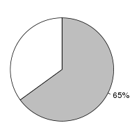
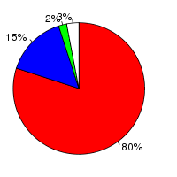
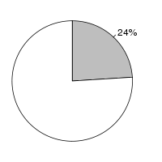
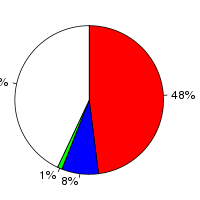

Arabidopsis thaliana (Arabidopsis thaliana, TAIR10) and Brassica rapa (Brassica rapa, IVFCAASv1) were aligned using the LastZ alignment algorithm (LastZ) in Ensembl release 76. Arabidopsis thaliana was used as the reference species. After running LastZ, the raw LastZ alignment blocks are chained according to their location in both genomes. During the final netting process, the best sub-chain is chosen in each region on the reference species.
Full list of pairwise alignments| Gap open penalty (O) | 400 |
| Gap extend penalty (E) | 30 |
| HSP threshold (K) | 3000 |
| Threshold for gapped extension (L) | |
| Threshold for alignments between gapped alignment blocks (H) | |
| Masking count (M) | |
| Seed and Transition value (T) | 1 |
| Additional parameters | |
| Scoring matrix (Q) | Default |
Number of alignment blocks: 166096
| Genome coverage(bp) | Coding exon coverage (bp) | |
|---|---|---|
| Arabidopsis thaliana |  |  |
| Covered: 77,219,813 out of 119,667,750 | Matches: 26,646,508 out of 33,462,323 | |
| Uncovered: 42,447,937 out of 119,667,750 | Mis-matches: 4,976,833 out of 33,462,323 | |
| Insertions: 731,332 out of 33,462,323 | ||
| Uncovered: 1,107,650 out of 33,462,323 | ||
| Brassica rapa |  |  |
| Covered: 69,360,095 out of 283,822,783 | Matches: 22,867,270 out of 48,055,850 | |
| Uncovered: 214,462,688 out of 283,822,783 | Mis-matches: 3,974,828 out of 48,055,850 | |
| Insertions: 395,251 out of 48,055,850 | ||
| Uncovered: 20,818,501 out of 48,055,850 |